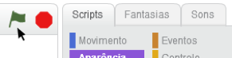

Faça seu próprio jogo de futebol
Clique na bandeira verde para jogar.

Você vai precisar de uma webcam (clique em "Permitir").
Agora tente fazer um remix do jogo usando as dicas abaixo. (Para ver como outras pessoas fizeram o remix, visite o Estúdio de futebol.)
Change the Ball
Clique na guia Fantasias.Escolha a bola que você quer usar.

Você pode usar as ferramentas de pintura para alterar a cor:
Speed Up the Ball
Clique na guia Scripts.
Para fazer a bola se mover mais rápido, digite um número maior no bloco mova:
Add a Ball
Experimente adicionar outra bola para ter diversão em dobro.
Clique na ferramenta de duplicação e depois clique na bola.

Change Color Effect
Faça a bola mudar de cor sempre que ela for atingida.
Clique na guia Scripts.
Arraste um bloco altere a cor e adicione-o ao script, assim:
Add Interactive Elements
Na lista de atores, selecione a garrafa d'água.
Clique na guia Scripts.
Então, construa esse script assim:
Agora, clique na garrafa d'água (no palco) para ver o que acontece.

Experimente adicionar outros blocos e efeitos.
Celebration Time!
Comemore quando o placar chegar a 5 pontos. Na lista de atores, selecione o balão.
Adicione um script como esse:
Você pode alterar os números e adicionar outros efeitos.
Save Your Project
Clique no botão de remix (próximo ao topo da tela) para salvar sua versão do projeto. (Você terá de acessar o Scratch ou se cadastrar).
Veja o Estúdio de futebol para ter mais ideias e adicioná-las ao seu projeto: